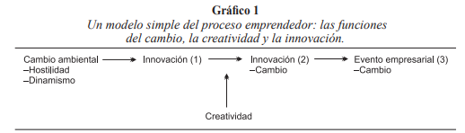
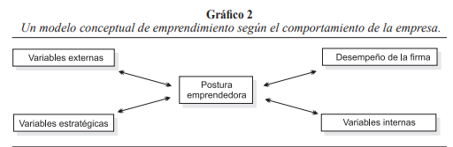
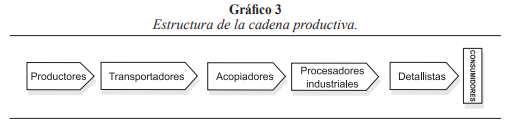
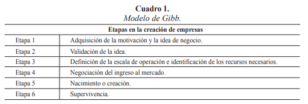

Con
la constante innovación en los mercados actuales hay diferentes modelos de
emprendimientos que muchos se están atreviendo a realizar y que están teniendo
éxito alrededor del mundo. Concretar las ideas en un producto o servicio y
lograr rentabilidad requiere de una serie de elementos que los emprendedores
deben tener presente en cada uno de los pasos que dan.
Kenneth
Morse, director académico del programa Selling
To CEOs and Top Management,
de INCAE, explica tres modelos de emprendimientos que se están utilizando
en la actualidad.
Emprendimiento
Tecnológico
Supone perseguir oportunidades en el espacio en blanco del ‘océano azul’;
oportunidades que se abren a través de avances tecnológicos que antes eran
irrealizables. Algunos ejemplos de este emprendimiento lo representan Watson
con su primer teléfono, Edison con las bombillas, Ford con la fabricación de
automóviles, Mitch Kapor con LOTUS 123, Larry Ellison con las bases de datos
relacionales en Oracle y muchas más.
Emprendimiento
de negocio
Innovar y emprender consiste en cambiar el juego creando nuevas oportunidades de
negocio. ¿Cómo? Solucionando un problema del consumidor a través de una forma
diferente de actuar. Un ejemplo de este modelo es Dell, que posibilitó un
modelo de venta directa de PC para aquellos usuarios que ya sabían lo que
querían (y que probablemente ya tenían un PC). Otro es Amazon con su
aproximación 24/7 en la venta de productos y que ha cambiado por completo
nuestra forma de comprar. Pero hay muchas más.
Emprendimiento
geográfico
Son empresas que emergen rápidamente en los países. Estos aprenden rápido los
modelos de negocio y tecnología innovadores que llegan del extranjero y los
adaptan a su mercado local en función de las necesidades y requisitos de éste.
En
la actualidad, los jóvenes emprendedores tecnológicos, que buscan llegar a
nuevos mercados, necesitan saber cómo mejorar las ventas y la gestión de éstas.
Al principio raramente son capaces de comercializar sus ideas rompedoras por sí
mismos. Deben formar equipo con empresarios e intraemprendedores para llevar
sus invenciones del laboratorio al mercado.
Los
empresarios comprenden las necesidades de los clientes y tienen las capacidades
de venta para que las invenciones encajen con las necesidades de los
clientes. Saben que es preciso tener planes específicos para vender a sus
clientes y que deben hacerse globales al principio del proceso de creación de
la compañía.
Extracto
del artículo: “Un CEO debe crear como un dios, mandar como rey y trabajar como
esclavo”, publicado en el sitio ABC de España.
Existen
diferentes modelos que intentan explicar el funcionamiento de los procesos de
emprendimiento. Éstos han sido desarrollos apoyándose en ciencias como la
Psicología, la Sociología, la Economía, la Administración y la Pedagogía, entre
otras. Dichos modelos abarcan desde la motivación, la decisión por la vida
empresarial, los procesos iniciales en la creación de empresas o productos
pasan por el plan de negocio y llegan hasta complejos modelos organizacionales
centrados en la administración de actividades, con fortalezas en lo humano, lo
financiero o lo operativo, e incluyen no sólo la creación sino la gestión del
negocio (Bruyat y Julien, 2000; Bygrave,
1989). La motivación, el riesgo, la incertidumbre, las decisiones, el futuro,
la oportunidad, las competencias o el mercado son algunos de los componentes
relevantes en la mayoría de estos modelos; las barreras de entrada, el tamaño
del mercado, el tiempo, el tipo de producto, el número de competidores, los
proveedores, los clientes, sus preferencias y necesidades, los productos
sustitutos, la diferenciación o la especialización, son algunas variables
importantes y puntos de referencia al iniciar un proceso de emprendimiento y
forman parte de algunos de los modelos (Shane, Locke y Collins, 2003).
La
propuesta del modelo de emprendimiento en red nace como resultado de una
investigación teórica con la revisión bibliográfica de modelos conceptuales de
emprendimiento, modelos de creación de empresas y modelos para la formación de
redes empresariales y de una investigación empírica con un estudio de campo
realizado con los resultados obtenidos en la ejecución de los tres estudios
sectoriales desarrollados con el Observatorio de Prospectiva Tecnológica
Industrial para la Competitividad Regional (Opticor) en
2006, en los sectores del Cuero y Calzado, Metalmecánica y Confecciones en la
ciudad de Cali. Partiendo de la reflexión de las diferencias existentes entre
la creación de empresas con una visión de funcionamiento independiente o
aislada y la creación de empresas con una visión de funcionamiento dentro de
una red empresarial, se intentará formular una propuesta de modelo de
emprendimiento para la creación de empresas para una red empresarial, que se ha
denominado MER (Modelo de Emprendimiento en Red).
MODELOS
DE EMPRENDIMIENTO
Diferentes
autores en el desarrollo de sus teorías han incluido al emprendedor como un
elemento importante en su fundamento teórico. Algunos ejemplos tomados de Hissich y Peters (2002) pueden ser Say
que en 1803 plantea que las ganancias individuales del emprendedor forman
capital; Schumpeter, en 1934, afirma que el emprendedor es un innovador y
desarrollador de nuevas tecnologías; McClellad, en
1961, propone que el emprendedor es un enérgico y moderado asumidor
de riesgos; Drucker, en 1964, plantea que el emprendedor maximiza las
oportunidades; en 1975, Shapero afirma en sus teorías
que el emprendedor toma la iniciativa y organiza algunos mecanismos sociales y
económicos, aceptando el riesgo de posibles pérdidas.
Al
analizar al emprendimiento desde la epistemología, es posible encontrar en los
decenios del ochenta y del noventa varios esfuerzos importantes, como los
desarrollados por Brazeal y Herberth (1999), Bygrave (1989a, 1989b) y Bygrave
y Hofer (1991), que enumeran diferentes perspectivas
científicas que aportan a la consolidación del emprendimiento como teoría y
buscan su fundamentación científica.
Al
buscar la relación del emprendimiento desde el punto de vista metodológico con
las diferentes ciencias, es posible encontrar relación entre algunas ciencias
básicas y aplicadas y el emprendimiento. Por ejemplo: se observa una relación
directa con la Economía y la Gestión; y una relación indirecta con la
Matemática, la Psicología, la Sociología y la Biología (Bygrave,
1989a).
Por
esta razón existen varios modelos de análisis del emprendimiento desde
diferentes perspectivas, según la relación existente con las ciencias básicas y
aplicadas. Incluso es posible analizar procesos de emprendimiento desde
aplicaciones tan complejas como la Teoría del Caos, por medio de modelos
matemáticos para intentar pronosticar el resultado en situaciones que dependen
de gran número de variables que no se comportan de forma lineal. Esta relación
fue planteada por Bygrave (1989b) al intentar
encontrar el paradigma del emprendimiento desde el caos y la cuántica.
Una
de las ciencias que tiene relación directa con el emprendimiento es la
economía. Esta relación puede ser muy clara desde la microeconomía con la
teoría de la oferta y la demanda, la teoría del consumidor o la de la
producción, o incluso con teorías modernas como la de juegos. En los últimos
años es posible encontrar artículos que relacionan el emprendimiento con la
macroeconomía, en el momento de utilizar indicadores agregados para la toma de
decisiones en procesos de emprendimiento con proyección o influencia
internacionales (Boumol, 1968).
Según
ciertos autores, es imposible hablar de emprendimiento en algunos casos sin
relacionarlo con términos como ‘cambio’, ‘creatividad’ o ‘innovación’ (Brazeal y Herbert, 1999). El emprendedor es un agente de
cambio que debe estar pendiente de transformaciones de su entorno para
adaptarse. Al analizar la empresa desde la Teoría General de Sistemas, la
mayoría de las empresas son un sistema social abierto y adaptativo2 , lo cual significa que su entorno (que puede ser
político, económico, tecnológico o social) tiene cierto nivel de influencia y
la empresa tiene la capacidad de adaptarse (Bertalanffy, 1984; Johansen, 1992).
En
la descripción del modelo simple del proceso emprendedor, Brazeal
y Herbert (1999), como se observa en el gráfico 1, proponen que la innovación
(1) es un concepto que proviene de la tecnología, la innovación (2) de la
Psicología y el evento empresarial (3) de la administración. Es posible
entender la creatividad como una característica del ser humano emprendedor y la
innovación como una ventaja competitiva del negocio (Ireland
y Webb, 2007). Esta innovación en muchos casos es un
cambio tecnológico que debe afectar el proceso de producción de la empresa
(Tomes, Erol y Armstrong, 2000).

Existen modelos de emprendimiento
que analizan no sólo la actuación del emprendedor dentro de la empresa, sino
que involucran elementos externos a las empresas. Un ejemplo es el modelo de
emprendimiento según el comportamiento de la empresa, ilustrado en el gráfico
2.

Una
postura emprendedora está reflejada en tres niveles de comportamiento
organizacional: la toma de riesgos de la dirección general en lo que hace
relación a decisiones de inversión y acciones estratégicas en situaciones de
incertidumbre; la magnitud y frecuencia de la innovación en productos y
tendencia hacia el liderazgo tecnológico, y la proactividad competitiva frente
a los rivales dentro de la industria. (Covin y
Slevin,1991).
En
este modelo la empresa se encuentra en continua interacción con su entorno, al
analizar variables externas, variables estratégicas y variables internas que
intervienen en sus procesos de emprendimiento. Los límites de la aplicación de
este tipo de modelos son definidos por el nivel de interacción de la empresa
con su entorno; es decir, para empresas muy cerradas o con poca relación con su
medio, no es el modelo que mejor describa sus procesos de emprendimiento. Este
nivel de interacción puede estar definido por el tipo de empresa, por su misión
o visión o por su entorno.
Dentro
del estudio del emprendimiento, el proceso de creación de empresas es quizás
uno de los más analizados; en la actualidad muchas universidades están
desarrollando o formulando su modelo de fomento al emprendimiento, el cual
incluye en el proceso de creación de empresas las especificidades de su modelo
pedagógico y del entorno que rodea a la institución, pero sobre todo el entorno
que debe enfrentar la nueva empresa. En la definición de las actividades que
forman parte de su modelo de emprendimiento, dichas universidades buscan la
apropiación de las competencias profesionales por parte de sus estudiantes, de
tal manera que puedan enfrentar los retos del mercado.
REDES
EMPRESARIALES
La
competitividad internacional ha aumentado con la firma de tratados de libre
comercio, situación que ha producido efectos negativos sobre el tejido
empresarial en algunos países latinoamericanos y ha ocasionado crisis y
recesión. En este entorno las únicas empresas que han logrado sobrevivir son
aquellas que han afrontado los retos por medio de precios competitivos,
ofreciendo mejor calidad de sus productos, mejorando la gestión administrativa,
el servicio al cliente y el mercadeo, fomentando la innovación y diversificando
la oferta. Para conseguir estos cambios, las grandes empresas alrededor del
mundo han recurrido a estrategias individuales, como por ejemplo la
reingeniería o la adopción de estándares internacionales, pero la mayoría de
las Mipymes4 no cuentan con los recursos ni la capacidad para ello, pues tienen
problemas de financiamiento, de información, desventajas en sus costos de
producción, promoción y distribución, escaso poder de negociación y barreras en
cuanto a capacitación, tecnología y logística, lo que se traduce en grandes
dificultades para competir en los mercados. Ésta es una de las razones por la
cual la organización productiva en agrupamientos constituye una alternativa de
solución para las Mipymes de países como los
latinoamericanos, como ha sucedido en la mayoría de los países asiáticos.
Existen
diferentes tipos de estructuras de organización productiva y social,
agrupamientos productivos, como cluster
o conglomerados, distritos industriales o redes empresariales horizontales (networks). Los clusters
son una concertación sectorial y geográfica de empresas que producen y venden
productos relacionados y dan lugar a economías externas y servicios
especializados. Los distritos especiales son transformaciones avanzadas de los clusters al dividirse en empresas
especializadas con una relación estrecha con el desarrollo local. Las redes
empresariales horizontales son un grupo de formas asociativas que cooperan en
un proyecto específico de desarrollo colectivo con un objetivo común (Onudi, 2004).
Las
redes empresariales son una estrategia colectiva utilizada en muchos países
como una solución a los retos que enfrentan las Mipymes
en el nuevo entorno global. Este entorno se caracteriza por una gran apertura
comercial, con reducciones en las barreras al comercio de bienes y servicios y
con procesos de integración comercial con otros países, como es el caso
planteado para el TLC entre Colombia y Estados Unidos, procesos que han
generado mayor competencia entre los productos nacionales y extranjeros. También
aparece un auge en el desarrollo de las tecnologías de la información y de las
comunicaciones (TIC); además, los consumidores actuales son cada vez más
exigentes y demandan productos con características muy específicas relacionadas
con aspectos como la calidad, la salud y el ambiente (productos muy
diferenciados).
En
términos generales, una cadena productiva (véase gráfico 3) “es el conjunto de
empresas que conforman una línea de producción, partiendo de actividades como
la obtención o explotación de materia prima hasta la comercialización de bienes
finales” (Onudi, 2004, 25). Sin que importe el tipo
de estructura de organización productiva, lo colectivo busca obtener valor.

El
término ‘valor’ se refiere a la cantidad de dinero que los compradores están
dispuestos a pagar por lo que una empresa ofrece, y refleja el alcance que
tiene el producto en el mercado con respecto a su precio, calidad y
características especiales. Una forma de generar valor en las cadenas
productivas y por ende aprovechar las oportunidades que brinda el nuevo entorno
mundial (en producción, procesos, servicios, sistemas de reciclaje, etc.) son
los mecanismos de asociatividad, como las redes empresariales horizontales y
verticales. Por medio de estos mecanismos se busca fortalecer las relaciones
entre los eslabones de la cadena productiva. Lo importante no es solamente
tener en cuenta todos los eslabones, sino que todos ellos puedan competir con
calidad para que la cadena sea eficiente (Henríquez, 2002).
La
red empresarial es una agrupación de empresas de una misma área productiva o de
servicios (v. gr., confección de ropa o calzado) que desarrollan actividades en
forma colectiva, cooperando y complementándose para lograr mejor
competitividad, gestión y productividad.
Los
empresarios que forman parte de ella intercambian información, ideas y
conocimiento con el fin de aprender e innovar. Así, las empresas asociadas
trabajan juntas en torno a un objetivo o problema común, pero conservando su
individualidad y autonomía gerencial y jurídica y participando de manera
voluntaria. En otras palabras: obtienen beneficios individuales a partir de
acciones conjuntas.
Los
miembros de una red logran aumentar la rentabilidad y competitividad de sus
empresas, elevar las capacidades de éstas sin necesidad de adquirir nuevos
recursos o desarrollar otras habilidades, alcanzar nuevos mercados y
consolidarse en ellos y acceder a servicios que no se podrían obtener de manera
individual, entre otros logros. Mediante las redes, los empresarios pueden
aumentar su poder de negociación con clientes y proveedores para obtener
insumos, promover y comercializar sus productos y acceder a financiamiento. De
esta manera pueden reducir sus costos y recibir asesoría y capacitación en
planeación, mercados, contabilidad y finanzas, liderazgo y aspectos jurídicos.
Además, los empresarios pueden acelerar sus procesos de aprendizaje al
intercambiar conocimientos y experiencias, lo que les permitiría especializarse
en aquellas actividades en las que tuvieran mayores ventajas; acceder a
servicios y actividades especializadas que no podrían obtener individualmente
como tecnologías, diseños, trámites y certificaciones, financiamiento, compras
de insumos en mejores condiciones (de calidad y precio), esquemas de promoción,
planeación, comercialización, asesoría e información oportuna del mercado y del
sector; aumentar la producción, productividad y flexibilidad, aprovechando las
capacidades de cada empresa; tener asistencia técnica e introducir sistemas de
producción ágiles y acordes a la situación de cada miembro de la red,
manteniendo la flexibilidad para adaptarse al entorno y permitiendo la especialización
en aquellas actividades en las que tienen mayores ventajas. Así pueden
responder mejor a los cambios en la demanda
Para
conformar una red empresarial horizontal es necesario seguir los siguientes
pasos adaptados de la propuesta metodológica de la Onudi
(López, 2003), en los que el orden es muy importante: 1) promoción y selección;
2) inicio de una base de confianza; 3) desarrollo de acciones piloto; 4) diseño
de proyecto estratégico; 5) gestión y autosostenibilidad. La metodología para
las redes verticales o desarrollo de proveedores sería: 1) promoción de la
demanda; 2) diagnóstico de empresa cliente y empresas proveedoras; 3)
desarrollo de una primera base de confianza; 4) elaboración del Plan de Mejora
y formulación de las recomendaciones técnicas para lograr los ajustes
necesarios; 5) implantación e inicio de operaciones y seguimiento, monitoreo,
ajustes, documentación, retroalimentación y análisis de réplica para generar
alianzas duraderas. Estas metodologías buscan contribuir al desarrollo de las
cadenas productivas en las regiones fomentando proyectos de integración de las Mipymes, para lograr su posicionamiento con una sólida
permanencia en los mercados nacionales e internacionales.
REDES
EMPRESARIALES Y EMPRENDIMIENTO
Las
redes empresariales basan su funcionamiento en elementos como las relaciones de
confianza, solidaridad y cooperación, que permiten que los procesos de
productividad y competitividad sean mas efectivos
(Lechner, Dowling y Welpe, 2006), con mejores
resultados para las empresas de la red y su entorno. Se han identificado
metodologías recomendadas por expertos para la formación de redes
empresariales, según el tipo de red, el sector o la región, metodologías que
demuestran los beneficios de la asociatividad en el corto y largo plazos
(Fuller y Warren, 2006). Se plantea entonces que ése es el futuro para países
como los latinoamericanos: crear redes que compitan local e internacionalmente,
con un desarrollo similar al de las empresas asiáticas, que tomaron la decisión
de orientarse al mercado y transformarse internamente para crear nuevos
productos (Li, Liu y Zhao, 2006).
Esta
orientación hacia los mercados internacionales puede ser más efectiva en un
proceso de creación de empresa, si es para ingresar en una red, pues la nueva
empresa hereda la orientación internacional; la visión del emprendedor es
redefinida en algunos casos por la visión de la red, razón por la cual es tan
importante la capacidad de adaptación de éste y de la nueva empresa que se ha
de crear (Harris y Wheeler, 2005).
Ser
una nueva empresa dentro de una red implica vincularse, o hasta crear un
eslabón en ella que funcionará de forma secuencial, que dependerá de los otros
eslabones y éstos dependerán de la nueva empresa. Esta relación de dependencia
es formalizada por transacciones de mercado (Thornton, 1999), contratos o
jerarquías generados con acuerdos que condicionan los vínculos entre las
empresas miembros de la red (Onudi, 2004); los
beneficios son asignados de forma equitativa según los recursos involucrados de
cada empresa en la red (Larson y Starr,1993).
En
este nuevo entorno de redes empresariales es importante analizar cómo un
emprendedor que quiere crear una empresa para ingresar en una puede tomar las
decisiones para lograr su objetivo, teniendo en cuenta las condiciones externas
existentes generadas por las otras empresas miembros de ella (Minniti, 2005). Para realizar esta tarea es necesario
relacionar modelos existentes de creación de empresas con metodologías para la
formación y gestión de redes utilizadas en países como los latinoamericanos,
que han seguido los estándares de países como los europeos y en especial los
asiáticos. Intentaremos organizar este análisis en forma de modelo normativo,
definiendo ciertos pasos que el emprendedor puede seguir.
Primero
es necesario retomar un modelo de creación de empresas que para nuestro caso
será el propuesto por Gibb (véase cuadro 1), que por las adaptaciones existentes al entorno
latinoamericano, es valido para el análisis
propuesto.

MER,
MODELO DE EMPRENDIMIENTO EN RED
5.1.
Etapa 0. Conocimiento de las redes empresariales
Esta
etapa “previa” debe permitirle al emprendedor conocer generalidades acerca de
la razón de ser, el funcionamiento, las ventajas y responsabilidades del
trabajo en red. Para que esta etapa se cumpla es fundamental que entidades
públicas o privadas como universidades y agremiaciones acopien información
pertinente acerca de las redes empresariales y busquen estrategias de
divulgación que tengan en cuenta las particularidades del público objetivo.
El
producto de esta etapa es un emprendedor sensibilizado respecto al tema,
susceptible de desarrollar la visión de crear una empresa para ingresar en una
red empresarial.
Etapa
1. Adquisición de la motivación e idea de negocio
En
esta etapa el emprendedor busca los estímulos y los objetivos para crear un
negocio (Mitton, 1989). Cuando se trata de la
creación de una empresa independiente o aislada, esta etapa está definida por
el análisis de diferentes alternativas de negocios y las formas de iniciarlos.
Cuando
contempla la creación de una empresa dentro de una red, el emprendedor debe
analizar las motivaciones personales que puede tener para vincularse a ella, a
un escenario donde las relaciones, no son sólo comerciales, sino
fundamentalmente personales, y donde se busca construir lazos de confianza,
solidaridad y cooperación. Si el emprendedor no tiene competencias personales
para trabajar en equipo y para solucionar conflictos ni le interesa
desarrollarlas, puede en esta etapa descubrir que es insuficiente su motivación
para crear una empresa sostenible en una red y desistirá de ello; pero si, por
el contrario, cuenta con la motivación suficiente, seguirá adelante en su
empeño.
Las
razones positivas o negativas de ingresar eventualmente en una red empresarial
pueden ser identificadas o aclaradas por el emprendedor analizando el
comportamiento de diferentes redes que funcionan en su entorno. En esta etapa
el análisis señalado es básico porque le permite confirmar si está o no
motivado para crear una empresa en una red (Davidsson
y Honig, 2003).
Es
factible que después que el emprendedor descubra la funcionalidad de las redes
empresariales, entienda la importancia de ser un eslabón de la red y conozca
los deberes y derechos que tendría si creara una empresa en ella. Este proceso
de análisis es fundamental para generar inicialmente ideas de eslabones que son
negocios potenciales.
La
funcionalidad de las redes depende de su tipo, y el emprendedor debe tener
claro estas diferencias que afectan directamente al tipo de eslabón que elija.
El
producto de esta etapa es una serie de ideas de negocios generadas a partir de
las motivaciones propias del emprendedor, del conocimiento básico del
funcionamiento de la red objetivo, pero sobre todo de las oportunidades que se
generan en el interior o en el entorno de ésta, o en ambos.
Validación
de la idea
Esta
etapa es quizá la más importante en el modelo de Gibb
(1988). Le sirve al emprendedor para evaluar las diferentes ideas de negocio y
descartar algunas que pueden ser imposibles de lograr. El autor propone una
serie de preguntas que pueden ayudar en esta tarea: ¿cual
es exactamente la idea?, ¿funcionará?, ¿está claramente identificada la
necesidad que se ha de satisfacer?, ¿es legal?, ¿es posible entrar en el
mercado?, etc.
Al
intentar crear una empresa en una red, se debe validar la idea, analizando
información sobre ella. Este análisis puede ser realizado de diferentes formas.
Para su desarrollo incluiremos algunos de los componentes definidos por la Onudi (2004) para la creación de minicadenas productivas,
por su aplicación en el entorno latinoamericano como los casos vistos en
Colombia, provenientes de modelos aplicados hace varios años en empresas y
sectores de países como los asiáticos (Li, 2005).
Los
elementos que le ayudan al emprendedor a estudiar la red empresarial donde
intenta crear la empresa pueden ser los análisis de sostenibilidad de la red;
en ellos se revisan los aspectos económicos y comerciales, ambientales y
sociales de la cadena y los análisis de competitividad con revisiones
sectoriales y de la red en el sector. Esta información es vital para el
emprendedor que intenta crear la empresa como un eslabón de la red, porque le
permite perfeccionar su idea o desecharla de una vez y mirar otra opción, que
puede generarse partiendo de estos análisis; también le pueden ayudar para
definir otra o crear mejor una empresa independiente.
Dentro
del análisis de sostenibilidad en el aspecto económico y comercial, es posible
incluir la posibilidad de ejecución de proyectos, los proyectos basados en
estudios de mercado serios y análisis prospectivos, la creación de
oportunidades de mercado, la formulación de un plan financiero y la
disponibilidad de una infraestructura básica de servicios. Éstas son algunas
variables importantes en el aspecto económico propuestas por la Onudi (2004). En lo referente a los aspectos sociales,
proponen analizar la compatibilidad social, la función de los agentes de
promoción y la base social competente alrededor de la red.
Otra
estrategia que facilitaría el cumplimiento de la etapa sería la discusión
directa de la idea de negocio con algunos de los miembros integrantes de la red
objetivo.
Etapa
3. Definición de la escala de operación e identificación de los recursos
necesarios
En
esta etapa el emprendedor debe identificar detalladamente los recursos
necesarios, el tiempo, la calidad de sus proveedores y materiales, los
consumidores y la escala del negocio, en el caso de la creación de una empresa
independiente o aislada.
En
el caso de la creación de una empresa en red, el emprendedor necesita tener muy
claro cómo está compuesta realmente ésta, cómo funciona, cuáles son sus
eslabones, cuáles son sus relaciones de interdependencia y cómo se distribuyen
los beneficios. Para obtener esta información, el emprendedor debe buscar o
realizar un diagnóstico de la red, el cual incluye diferentes variables,
como10: 1) productos principales; 2) eslabones; 3) características de las
unidades productivas; 4) número de unidades productivas; 5) tecnología, equipos
y prácticas empleados; 6) perfil del recurso; 7) fortalezas y debilidades de la
red y de cada eslabón; 8) importancia de la red en la economía regional y en la
generación de empleo; 9) potencialidad para agregar valor a los productos
elaborados en la región.
La
metodología de la Onudi propone agrupar estas
variables en siete componentes (Onudi, 2004), que
son: productivo y tecnológico, mercadeo y comercialización, gestión
empresarial, capacitación y formación, mejoramiento ambiental y, por último,
social y comunitario. En cada uno es necesario analizar los eslabones y los
problemas encontrados en el diagnóstico.
La
definición de la escala de operación y la identificación de los recursos
necesarios para iniciar el negocio en una red dependen fundamentalmente del
eslabón en cual se propone ingresar o crear, del tipo de red, del sector y
especialmente de los acuerdos que garanticen las relaciones y las
interdependencias.
Negociación
del ingreso al mercado
Esta
etapa busca crear y aplicar el plan de negocio; incluye la negociación con
bancos (capital), con empleados (mano de obra), con proveedores (materia prima)
y con distribuidores (canales de distribución).
En
este componente del modelo existe gran diferencia entre crear una empresa
independiente o aislada y crear una empresa en una red. Los procesos de
negociación son muy diferentes dentro de una red, porque hay relaciones de
interdependencia y negociaciones colectivas que permiten obtener mayores
beneficios que las empresas que funcionan fuera de ella. La confianza y la
cooperación, el fundamento de la asociatividad, son claves en los procesos de
negociación y alianzas, incluso para las nuevas empresas de la red (Álvarez, Ireland y Rever, 2006). En la mayoría de las redes los
beneficios obtenidos para cada uno de los miembros son heredados por los nuevos
miembros; dichos beneficios son: descuentos en materia prima, transporte,
personal, servicios públicos, impuestos, tecnología y capacitación, entre
otros.
En
Colombia existe actualmente apoyo en algunas regiones del gobierno local para
crear empresas como eslabones faltantes o débiles de algunas redes
empresariales, en forma de ayudas en disminución de impuestos o acompañamiento
técnico que motivan la creación de este tipo de redes.
Etapa
5. Nacimiento o creación de la empresa
Esta
etapa es muy importante para el funcionamiento y para el futuro del negocio,
pues cuando la empresa es independiente o aislada, depende ciento por ciento
del emprendedor, de sus recursos y tiempo, y en especial de su capital humano y
social (Anderson y Miller, 2003).
Si
hablamos de la creación de una empresa en una red, su arranque es el inicio de
un conjunto de relaciones con todos los eslabones existentes de dicha red;
estas relaciones se consolidan por medio de acuerdos que en su mayoría pueden
ser contratos para garantizar la operación. Es muy posible que desde el inicio
la nueva empresa disfrute de las ventajas de estar en una red; en otros casos,
puede pasar un lapso para comenzar a obtener beneficios.
Etapa
6. Supervivencia
Esta
etapa es la consolidación del negocio. Para una empresa independiente o
aislada, este proceso involucra el control financiero de sus flujos, el
desarrollo del mercado y la estabilización del proceso de aprendizaje de sus
empleados. En una nueva empresa dentro de una red, este período de tiempo es
constante; los eslabones siempre están aprendiendo y adaptándose a su entorno o
a cambios internos de la red; ya no es una decisión del emprendedor, es una
decisión de la red el cambio permanente. La supervivencia de una empresa en la
red depende de la visión del emprendedor y de las relaciones de confianza,
solidaridad y cooperación que sean construidas desde la creación de la empresa.
En esta etapa, el emprendedor y los miembros de la red deben realizar constantemente
un análisis de solidaridad y equidad, para garantizar la convivencia a largo
plazo.
La
evaluación de los niveles de solidaridad y equidad en una red empresarial son
muy complejos, y es posible que tiendan a ser subjetivos; pero la evaluación
debería girar en torno al análisis del objetivo de los procesos de
conformación, a entender el modelo económico que funciona dentro de la red, que
debería ser el solidario, y a estudiar muy bien las formas de integración que
operan en ella.
Para
utilizar este modelo en la vida real, un emprendedor debe buscar información
que le permita seguir cada etapa. Quizás obtener esta información sea en
algunos casos imposible porque no exista una entidad pública o privada que
realice este tipo de estudios en la región o sector en el que el emprendedor
intenta crear su empresa. La ventaja es que en la
actualidad, en la mayoría de los países latinoamericanos existen estas
entidades que intentan formar o crear redes, pues son el futuro para las
empresas de la región, especialmente para las Mipymes.
En
la realidad empresarial, muchas de las nuevas empresas que ingresan en una red
son creadas por emprendedores que ya están dentro de ella como empleados o
socios de una empresa de la red y desarrollan su idea de negocio partiendo de
la información que han recolectado y de su experiencia; algunas redes se
convierten entonces en incubadoras de nuevas empresas (Bollingtoft
y Ulhoi, 2005).
Hernán González Campo, Carlos, & Gálvez Albarracín, Édgar
Julián (2008). Modelo de Emprendimiento en Red -MER. Aplicación de las teorías
del emprendimiento a las redes empresariales. Academia. Revista
Latinoamericana de Administración, (40),13-31.